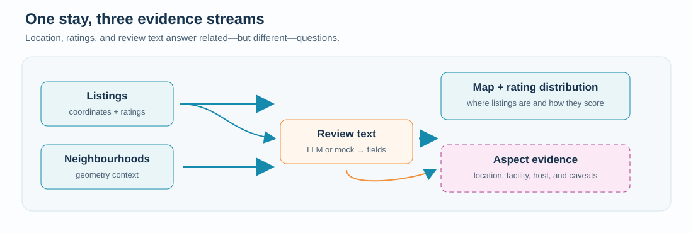
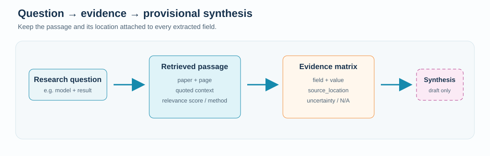
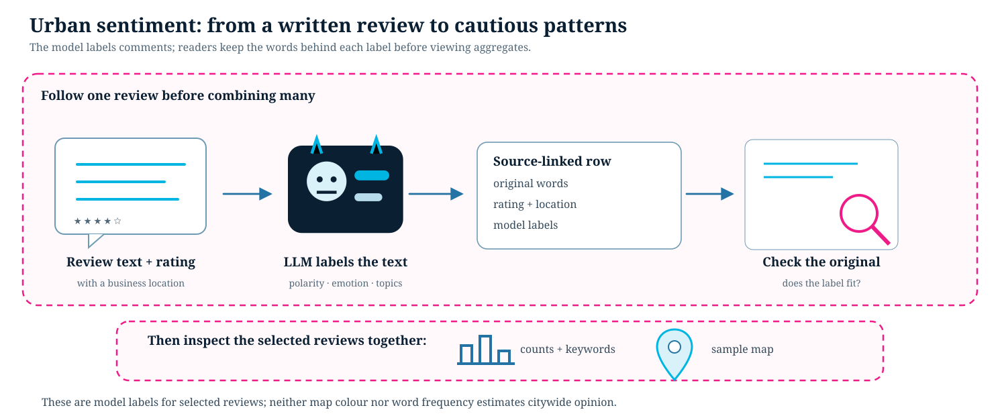

On this page
Module 2: LLM for Structuring Information
Starter kits: four notebooks under starter_kits/2_llm_structure_output/
Related API: ccai9012.llm_utils · ccai9012.viz_utils
What problem does this module solve?
Large language models are useful here as structuring assistants: they can turn review text or retrieved document passages into fields that can be inspected, compared, and visualised. The output remains provisional evidence. Raw text, source locations, prompts, model metadata, and uncertainty should be retained whenever a result supports a real claim.
Modular mapping: unstructured text or PDF passages → structured fields → tables, maps, distributions, and research questions.
Shared prerequisites: Python and pandas, basic JSON/CSV handling, and critical reading of model outputs. Live API calls are optional and are not required for the default notebook paths.
Choose a learning path
| Notebook | Question | Offline default | Main output |
|---|---|---|---|
airbnb_hk.ipynb |
How do location, ratings, and review text provide different evidence about a stay? | Two Inside Airbnb samples + deterministic mock labels | Aspect-level review table, map, rating distribution, and word clouds |
lit_review.ipynb |
How can a research question become a traceable evidence matrix? | Local PDF text + tracked cached LLM tables | Paper/field/value matrix with passage, page, and uncertainty |
energy_plan.ipynb |
How can repeated PDF questions become comparable policy notes? | Existing four-stage workflow + cached outputs | Location/objectives/actions/stakeholders/timeline comparison |
urban_sentiment.ipynb |
How can sampled Yelp reviews become a cautious city scorecard? | 60 cached Indianapolis labels | Polarity-by-star scorecard, maps, and keyword inspection |
Data and access
The module-level sample_manifest.json records sample sources, licence notes, selection rules, schemas, and row counts. The Airbnb sample files are derived from the tracked Inside Airbnb Hong Kong snapshot and provide central_western and yau_tsim_mong configurations. The urban sentiment sample is derived from tracked cached Yelp-labelled output; it is not human ground truth.
The default notebooks do not download data, request an API key, or call a paid model. Each notebook exposes a clearly marked live branch. Before enabling it, record the model, date, prompt, output path, cost boundary, and data-handling decision. For full Yelp data, obtain the current dataset and terms yourself; the repository does not silently download or extract an archive.
Airbnb reviews: map-to-sentiment evidence trail

The notebook joins listings, neighbourhood geometry, and review text. GeoPandas supplies polygon context, Folium turns coordinates into an interactive map, and llm_utils.analyze_airbnb_reviews optionally converts review text into overall_impression, decision_tags, and location/facility/host fields. The mock path keeps the input/output contract visible without pretending to be an LLM evaluation.
After each map, rating histogram, and word cloud, ask what the visual encodes and what it cannot establish. Review samples are not population estimates, ratings and text are not interchangeable endpoints, and spatial concentration is not causation.
Literature review: question-to-evidence matrix

This path separates retrieval, summarisation, structured extraction, and synthesis. Each field retains a paper, retrieved passage, source location, and uncertainty note; missing information is written as N/A rather than silently inferred. The tracked cached tables are used for offline parsing, while local PDF text provides a transparent page-level evidence lookup.
Use the matrix to formulate follow-up reading questions. It is a comparison aid, not a substitute for opening the original paper.
Energy plans: preserve the four-stage RAG workflow
The Energy Plan notebook retains the accepted prepare → retrieve → structure → compare narrative and its step-highlight SVGs. The default run reads local PDFs and tracked cached outputs; the optional semantic retriever and LLM branch remain explicit. Its comparison fields are Location, Main Objectives, Key Actions, Stakeholders, and Timeline, with N/A for missing evidence.
The workflow is useful for cross-city policy documents or a focused methods/results review, provided filenames and page context survive into the evidence record. Retrieval can miss scans, tables, or neighbouring context, and an LLM can flatten uncertainty.
Urban sentiment: reviews-to-city scorecard

The notebook keeps raw review text, stars, coordinates, polarity, emotion, and keywords together before aggregation. viz_utils.plot_review_heatmap and plot_review_map show sampled spatial patterns; scorecards and distributions show how labels relate to stars. Neither establishes population sentiment or causal urban conditions.
Common glossary and extensions
- Retrieval: selecting passages relevant to a question; it is not summarisation.
- Structured extraction: assigning evidence to a fixed schema; it is not verification.
- Cached/mock output: an offline teaching fixture used to test parsing and visualisation, not a new model run.
- Source location: the filename and page/section needed to reopen the original evidence.
N/A: the field is absent from the retained evidence; it is not permission to guess.
Extensions include human-checking a labelled subset, comparing two prompts or models, retaining raw JSON responses, adding confidence/error audits, and linking every aggregate back to source rows. Related paths are Module 1: paired generative ML, Module 3: multimodal reasoning, and the llm_utils API.